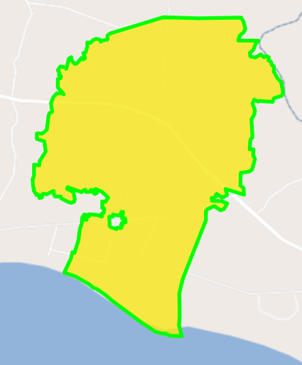
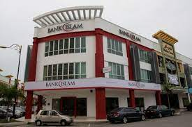

THE AREA AND POPULATION OF MERLIMAU

AREA OF LAND(km²):57.81km²
POPULATION DENSITY:322.3/km²
POPULATION OF MERLIMAU
MALES:10,156 (54.5%)
FEMALES:8,476 (45.5%)
TOTAL:18,632 people
THE FACILITIES PREPARED IN MERLIMAU

EDUCATIONAL FACILITIES
There are multiple Educational Facilities that have been prepared for the citizens of Merlimau.
The Educational Facilities have been categorized as such:
- Primary Level
- Secondary Level
- Higher Education Institutions
FINANCIAL FACILITIES
There are numerous Financial Facilities for the citizens of Merlimau regarding their financial inquiries.
The Financial Facilities offered at Merlimau are:


PUBLIC SERVICES
Multiple Public Services buildings have been constructed to aid the citizens of Merlimau if there are any emergency to occur.